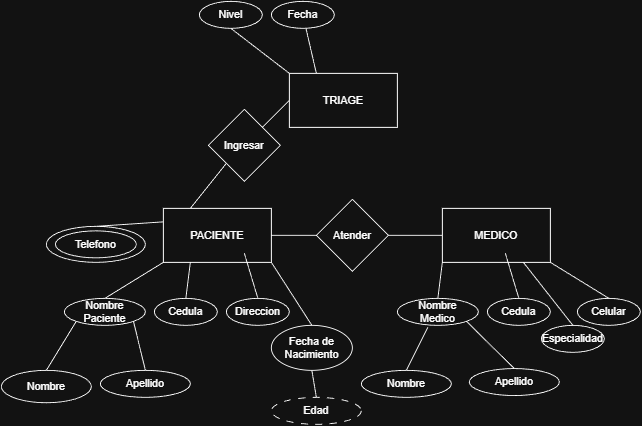

Evidencias del Semestre
Documentación técnica de procesos de ingeniería.


Proyecto Final
Gestión de Gimnasio
Diseño de base de datos relacional normalizada a 3FN.
DocumentaciónEstudiante de tercer semestre de Ingeniería de Sistemas en la Universidad El Bosque. Especializado en el diseño de arquitecturas de datos y optimización de algoritmos bajo estándares de alta exigencia.
Documentación técnica de procesos de ingeniería.

Diseño de base de datos relacional normalizada a 3FN.
DocumentaciónLógica de negocio y persistencia de datos robusta.
Conteo granular de operaciones para eficiencia algorítmica.